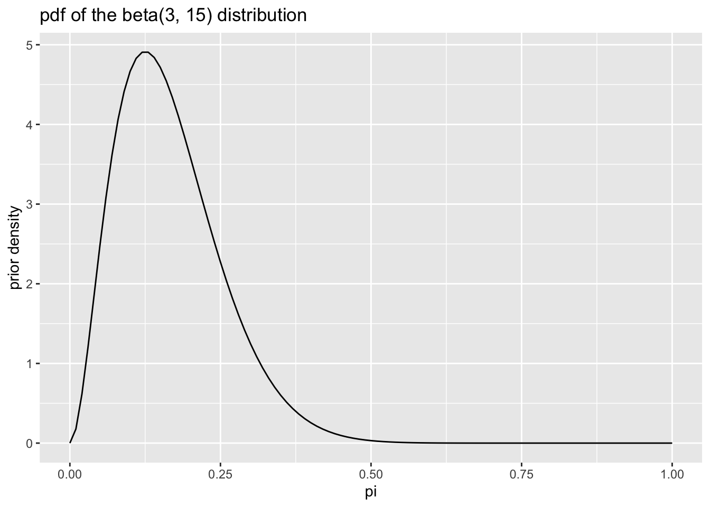

2.2 Example: Bernoulli
As a running example, we use the toothpaste cap problem:
We have a toothpaste cap–one with a wide bottom and a narrow top. We’re going to toss the toothpaste cap. It can either end up lying on its side, its (wide) bottom, or its (narrow) top.
We want to estimate the probability of the toothpaste cap landing on its top.
We can model each toss as a Bernoulli trial, thinking of each toss as a random variable \(X\) where \(X \sim \text{Bernoulli}(\pi)\). If the cap lands on its top, we think of the outcome as 1. If not, as 0.
Suppose we toss the cap \(N\) times and observe \(k\) tops. What is the posterior distribution of \(\pi\)?
2.2.1 The Likelihood
According to the model \(f(x_i \mid \pi) = \pi^{x_i} (1 - \pi)^{(1 - x_i)}\). Because the samples are iid, we can find the joint distribution \(f(x) = f(x_1) \times ... \times f(x_N) = \prod_{i = 1}^N f(x_i)\). We’re just multiplying \(k\) \(\pi\)s (i.e., each of the \(k\) ones has probability \(\pi\)) and \((N - k)\) \((1 - \pi)\)s (i.e., each of the \(N - k\) zeros has probability \(1 - \pi\)), so that the \(f(x | \pi) = \pi^{k} (1 - \pi)^{(N - k)}\).
\[ \text{the likelihood: } f(x | \pi) = \pi^{k} (1 - \pi)^{(N - k)}, \text{where } k = \sum_{n = 1}^N x_n \\ \]
2.2.2 The Prior
The prior describes your beliefs about \(\pi\) before observing the data.
Here are some questions that we might ask ourselves the following questions:
- What’s the most likely value of \(\pi\)? Perhaps 0.15.
- Are our beliefs best summarizes by a distribution that’s skewed to the left or right? To the right.
- \(\pi\) is about _____, give or take _____ or so. Perhaps 0.17 and 0.10.
- There’s a 25% chance that \(\pi\) is less than ____. Perhaps 0.05.
- There’s a 25% chance that \(\pi\) is greater than ____. Perhaps 0.20.
Given these answers, we can sketch the pdf of the prior distribution for \(\pi\).

Now we need to find a density function that matches these prior beliefs. For this Bernoulli model, the beta distribution is the conjugate prior. While a conjugate prior is not crucial in general, it makes the math much more tractable.
So then what beta distribution captures our prior beliefs?
There’s a code snippet here to help you explore different beta distributions.
After some exploration, I find that setting the parameters \(\alpha\) and \(\beta\) of the beta distribution to 3 and 15, respectively, captures my prior beliefs about the probability of getting a top.
 The pdf of the beta distribution is \(f(x) = \frac{1}{B(\alpha, \beta)} x^{\alpha - 1}(1 - x)^{\beta - 1}\). Remember that \(B()\) is the beta function, so \(\frac{1}{B(\alpha, \beta)}\) is a constant.
Let’s denote our chosen values of \(\alpha = 3\) and \(\beta = 15\) as \(\alpha^*\) and \(\beta^*\). As we see in a moment, it’s convenient distinguish the parameters in the prior distribution from other parameters.
\[ \text{the prior: } f(\pi) = \frac{1}{B(\alpha^*, \beta^*)} \pi^{\alpha^* - 1}(1 - \pi)^{\beta^* - 1} \]
2.2.3 The Posterior
Now we need to compute the posterior by multiplying the likelihood times the prior and then finding the normalizing constant. \[ \text{the posterior: } \displaystyle \underbrace{f(\pi \mid x)}_{\text{posterior}} = \frac{\overbrace{f(x \mid \pi)}^{\text{likelihood}} \times \overbrace{f(\pi)}^{\text{prior}}}{\displaystyle \underbrace{\int_{-\infty}^\infty f(x \mid \pi)f(\pi) d\pi}_{\text{normalizing constant}}} \\ \] Now we plug in the likelihood, plug in the prior, and denote the normalizing constant as \(C_1\) to remind ourselves that it’s just a constant.
\[ \displaystyle f(\pi \mid x) = \frac{\left[ \pi^{k} (1 - \pi)^{(N - k) }\right] \times \left[ \frac{1}{B(\alpha^*, \beta^*)} \pi^{\alpha^* - 1}(1 - \pi)^{\beta^* - 1} \right]}{ C_1} \\ \]
\[ \text{the posterior: } \displaystyle \underbrace{f(\pi \mid x)}_{\text{posterior}} = \frac{\overbrace{\left[ \pi^{k} (1 - \pi)^{(N - k) }\right] }^{\text{likelihood}} \times \overbrace{ \left[ \frac{1}{B(\alpha^*, \beta^*)} \pi^{\alpha^* - 1}(1 - \pi)^{\beta^* - 1} \right] }^{\text{prior}}}{\displaystyle \underbrace{C_1}_{\text{normalizing constant}}} \\ \]
Now we need to simplify the right-hand side.
First, notice that the term \(\frac{1}{B(\alpha^*, \beta^*)}\) in the numerator is just a constant. We can incorporate that constant term with \(C_1\) by multiplying top and bottom by \(B(\alpha^*, \beta^*)\) and letting \(C_2 = C_1 \times B(\alpha^*, \beta^*)\).
\[ \text{the posterior: } \displaystyle \underbrace{f(\pi \mid x)}_{\text{posterior}} = \frac{\overbrace{\left[ \pi^{k} (1 - \pi)^{(N - k) }\right] }^{\text{likelihood}} \times \left[ \pi^{\alpha^* - 1}(1 - \pi)^{\beta^* - 1} \right] }{\displaystyle \underbrace{C_2}_{\text{new normalizing constant}}} \\ \]
Now we can collect the exponents with base \(\pi\) and the exponents with base \((1 - \pi)\).
\[ \text{the posterior: } \displaystyle \underbrace{f(\pi \mid x)}_{\text{posterior}} = \frac{\left[ \pi^{k} \times \pi^{\alpha^* - 1} \right] \times \left[ (1 - \pi)^{(N - k) } \times (1 - \pi)^{\beta^* - 1} \right] }{ C_2} \\ \] Recalling that \(x^a \times x^b = x^{a + b}\), we combine the powers.
\[ \text{the posterior: } \displaystyle \underbrace{f(\pi \mid x)}_{\text{posterior}} = \frac{\left[ \pi^{(\alpha^* + k) - 1} \right] \times \left[ (1 - \pi)^{[\beta^* + (N - k)] - 1} \right] }{ C_2} \\ \] \[ \displaystyle f(\theta \mid x) = \frac{f(x \mid \theta) \times f(\theta)}{\displaystyle \int_{-\infty}^\infty f(x \mid \theta)f(\theta) d\theta} \]
Because we’re clever, we notice that this is almost a beta distribution with \(\alpha = (\alpha^* + k)\) and \(\beta = [\beta^* + (N - k)]\). If \(C_2 = B(\alpha^* + k, \beta^* + (N - k))\), then the posterior is exactly a \(\text{beta}(\alpha^* + k, \beta^* + [N - k]))\) distribution.
This is completely expected. We chose a beta distribution for the prior because it would give us a beta posterior distribution. For simplicity, we can denote the parameter for the beta posterior as \(\alpha^\prime\) and \(\beta^\prime\), so that \(\alpha^\prime = \alpha^* + k\) and \(\beta^\prime = \beta^* + [N - k]\)
\[ \begin{aligned} \text{the posterior: } \displaystyle \underbrace{f(\pi \mid x)}_{\text{posterior}} &= \frac{ \pi^{\overbrace{(\alpha^* + k)}^{\alpha^\prime} - 1} \times (1 - \pi)^{\overbrace{[\beta^* + (N - k)]}^{\beta^\prime} - 1} }{ B(\alpha^* + k, \beta^* + [N - k])} \\ &= \frac{ \pi^{\alpha^\prime - 1} \times (1 - \pi)^{\beta^\prime - 1} }{ B(\alpha^\prime, \beta^\prime)}, \text{where } \alpha^\prime = \alpha^* + k \text{ and } \beta^\prime = \beta^* + [N - k] \end{aligned} \]
This is an elegant, simple solution. To obtain the parameters for the beta posterior distribution, we just add the number of tops (Bernoulli successes) to the prior value for \(\alpha\) and the number of not-tops (sides and bottoms; Bernoulli failures) to the prior value for \(\beta\).
Suppose that I tossed the toothpaste cap 150 times and got 8 tops.
# prior parameters
alpha_prior <- 3
beta_prior <- 15
# data
k <- 8
N <- 150
# posterior parameters
alpha_posterior <- alpha_prior + k
beta_posterior <- beta_prior + N - k
# plot prior and posterior
gg_prior <- ggplot() +
stat_function(fun = dbeta, args = list(shape1 = alpha_prior, shape2 = beta_prior)) +
labs(title = "prior distribution", x = "pi", y = "prior density")
gg_posterior <- ggplot() +
stat_function(fun = dbeta, args = list(shape1 = alpha_posterior, shape2 = beta_posterior)) +
labs(title = "posterior distribution", x = "pi", y = "posterior density")
library(patchwork)
gg_prior + gg_posterior
2.2.4 Point Estimates
- The posterior mean. The posterior mean minimizes a squared-error loss function. That is, the cost of guessing \(a\) when the truth is \(\alpha\) is \((a - \alpha)^2\). In the case of the beta posterior, it’s just \(\dfrac{\alpha^\prime}{\alpha^\prime + \beta^\prime}\). For our prior and data, we have \(\dfrac{3 + 8}{(3 + 8) + (15 + 150 - 8)} \approx 0.065\).
- The posterior median: The posterior median minimizes an absolute loss function where the cost of guessing \(a\) when the truth is \(\alpha\) is \(|a - \alpha|\). Intuitively, there’s a 50% chance that \(\pi\) falls above and below the posterior median. In the case of the beta posterior, it’s just \(\dfrac{\alpha^\prime - \frac{1}{3}}{\alpha^\prime + \beta^\prime - \frac{2}{3}}\) (for \(\alpha^\prime, \beta^\prime > 1\)). For our prior and data, we have \(\dfrac{3 + 8 -\frac{1}{3}}{(3 + k) + (15 + 150 - 8) - \frac{2}{3}} \approx 0.064\).
- The posterior mode: The posterior mode is the most likely value of \(\pi\), so it minimizes a loss function that penalizes all misses equally. In the case of the beta posterior, it’s just \(\dfrac{\alpha^\prime - 1}{\alpha^\prime + \beta^\prime - 2}\) (for \(\alpha^\prime, \beta^\prime > 1\)). For our prior and data, we have \(\dfrac{3 + 8 - 1}{(3 + k) + (15 + 150 - 8) - 2} \approx 0.060\).
2.2.5 Credible Interval
Using the percentile method, we can compute the 90% and 95% credible intervals with qbeta().
# 90% credible interval
qbeta(c(0.05, 0.95), 3 + 8, 15 + 150 - 8)## [1] 0.03737493 0.09945329# 95% credible interval
qbeta(c(0.025, 0.975), 3 + 8, 15 + 150 - 8)## [1] 0.03333712 0.107363232.2.6 Simulation
We don’t need to use simulation here—we have the simple closed-form posterior. However, let’s see how simulation would work.
post_sims <- rbeta(1000, 3 + 8, 15 + 150 - 8)
# posterior density
gg_data <- tibble(post_sims)
ggplot(gg_data, aes(x = post_sims)) +
geom_histogram()## `stat_bin()` using `bins = 30`. Pick better value with `binwidth`.
# posterior mean
mean(post_sims)## [1] 0.06558303# credible interval